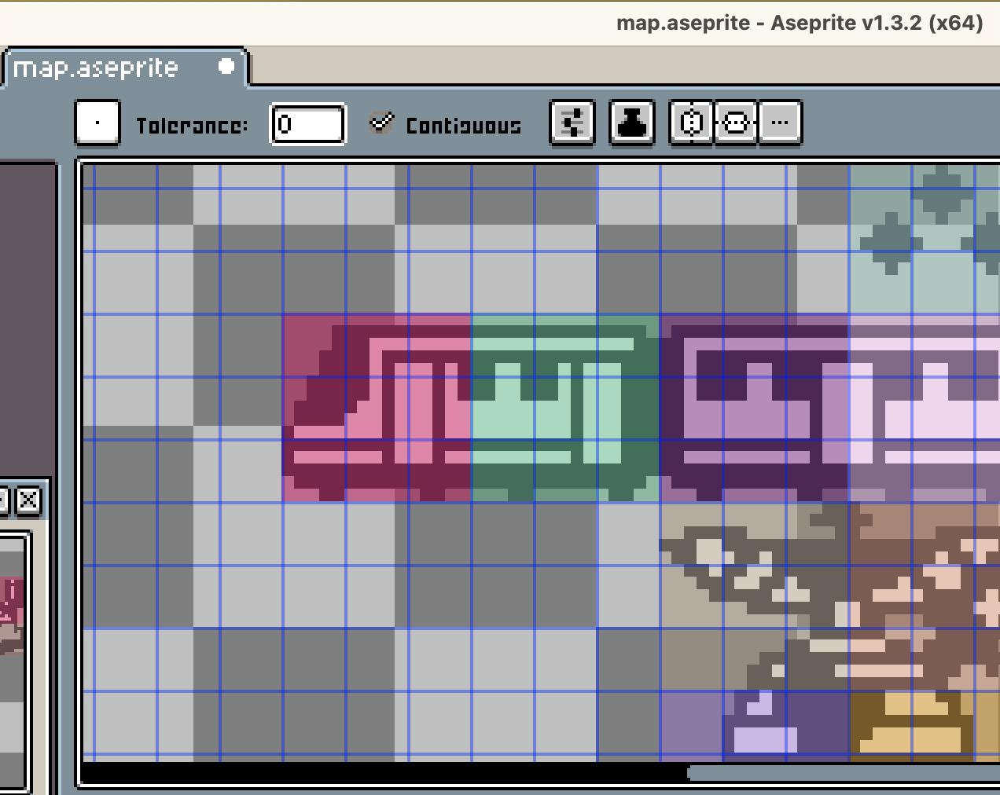
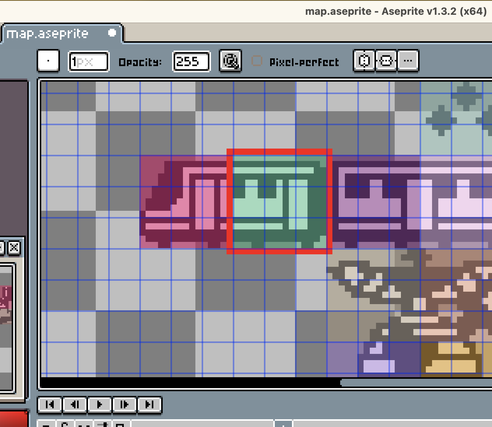

It would be a bad experience for players if these puzzles had multiple solutions or if they required guesses. It would also be a bad experience if these puzzles either on their own or as a piece in a grouping. So, these are the things I need to maximize.
I’ve been ensuring solvability by actually solving every puzzles. That’s enjoyable, but slow, and is not scalable as I build out more puzzles. It also doesn’t ensure that puzzles have one solution, since another person, or even another attempt by me, could result in a different solution.
This project has had me look into other Nonogram games. I came across this comment by @bradenbest on UFO 50 Nonograms that stuck with me:
[…] some nonogram implementations like to check your solution against the map the puzzle was generated from instead of against the hints, resulting in valid solutions being rejected because the puzzle has multiple solutions but the game only accepts one.
I mean, checking against the map the puzzle was generated is exactly what I’m doing. I didn’t want to check against the clues though, since I’m trying to make this one big collage and that keeping the continutity of the collage is very important.
Thinking about this had me thinking through how I could ensure puzzles have unique solutions.
Of course I started on the Nonogram Wikipedia entry, which has plenty of really good strategies for players, but a limited amount of information on potential algorithms to implement within a solver.
An extensive comparison and discussion of nonogram solving algorithms is found at the WebPBN site (Web Paint-By-Number). A nonogram solver written in C++ and published in the journal Pattern Recognition solves lines in quadratic time at most.
That article within Pattern Recognition is called Solving Nonograms by combining relaxation. It’s written by Kees Joost Batenburg and Walter A. Kosters, both of whom hold PhDs in Mathematics. I didn’t read this - it’s $30 for the PDF. This work has been cited a bunch too, like in Nonograms: Combinatorial questions and algorithms and in Automated generation and visualization of picture-logic puzzles. Sort of neat there there is are academic articles written about Nonograms.
The wikipedia mentioned WebPBN, which is a site I never heard of but instantly fell in love with. What a charming slice of the internet!
Web Paint by Number is an on-line puzzle community where people create and solve a type of Japanese logic puzzle known as nonograms, griddlers, or paint by number puzzles. It’s been very successful both as a sophisticated programming project and as a vibrant on-line community. That’s straight from Jan Wolter, the sites creator. The more I look into this guy, the more I realize that he was completely awesome. His personal site unixpapa.com, which is a totally rad domain to have, is totally worth exploring.
He wrote this great page that goes over tips and strategies for creating uniquely solvable puzzles: Advice on How To Create Puzzles. He also wrote a bit on solvers: Survey of Paint-by-Number Puzzle Solvers. And, he built a really great solver called pbnsolve.
I told you, Jan was the real deal!
I looked through the README of pbnsolve and saw it accepts Portable BitMap format (PBM wiki).
I had no clue what the heck this was, but after looking at the format I realized that this is the perfect format to use since it matches so closely to my internal format for puzzles and sprites.
I’ll go into how the renderer works in a different post, but anything that is not an individual pixel, line, or rectangle, is an RR_Sprite, including the font.
At a high level: I have a lot of scripts go from PNG to RR_Sprite written directly to .inc files that are #included directly in the source code.
Like I talked about in 005-week-by-week, everything starts in Aseprite.

Let’s look at this puzzle in particular

This area gets transformed to this struct at build time.
typedef struct PuzzleOnMap {
unsigned int puzzle_id;
unsigned int prize_id;
int x;
int y;
int width;
int height;
RR_Sprite sprite;
} PuzzleOnMap;
typedef struct RR_Sprite {
unsigned int width;
unsigned int height;
unsigned char data[RR_MAX_SPRITE_WIDTH * RR_MAX_SPRITE_HEIGHT];
} RR_Sprite;
This is what it looks like in generated_map.inc:
{
5,4,155,135,15,15, {
15,15,{ 0,0,0,0,0,0,0,0,0,0,0,0,0,0,0,2,2,2,2,2,2,2,2,2,2,2,2,2,2,0,1,1,1,1,1,1,1,1,1,1,1,1,1,2,2,2,2,2,2,2,2,2,2,2,2,2,2,2,2,2,2,2,1,1,2,2,2,1,2,1,1,1,2,2,2,2,2,1,1,2,2,2,1,2,1,1,1,2,2,2,2,2,1,1,2,2,2,1,2,1,1,1,2,2,2,1,1,1,1,1,1,1,1,2,1,1,1,2,2,2,1,1,1,1,1,1,1,1,2,1,1,1,2,2,2,1,1,1,1,1,1,1,1,2,1,1,1,2,2,2,2,2,2,2,2,2,2,2,2,1,1,1,2,2,2,1,1,1,1,1,1,1,1,2,1,1,1,2,2,2,2,2,2,2,2,2,2,2,2,2,2,2,2,2,2,2,2,2,2,2,2,2,2,2,2,2,2,2,2,0,0,0,0,2,2,0,0,0,0,0,0,2,2,0,0
}}}
Then I take RR_Sprite data, which is simply 0: transparent, 1: white, 2: black and transforming that to PBM format.
P1
15 15
000000000000000
111111111111110
000000000000011
111111111111111
110011101000111
110011101000111
110011101000111
000000001000111
000000001000111
000000001000111
111111111000111
000000001000111
111111111111111
111111111111110
000110000001100
Then using pbnsolve to solve all the puzzles and checking for uniqueness.
[...]
for file in build/pbms/*.pbm; do ./pbnsolve -u $file -b; done
unique logical
unique logical
unique logical
unique logical
unique logical
unique logical
unique logical
unique logical
unique logical
unique logical
unique logical
unique logical
unique logical
unique logical
unique logical
unique logical
[...]
Now, thanks to a comment I randomly came across on itch.io, and a powerhouse of a developer named Jan Wolter, I feel good about building a fair Nonogram game and have tooling to keep myself in check.